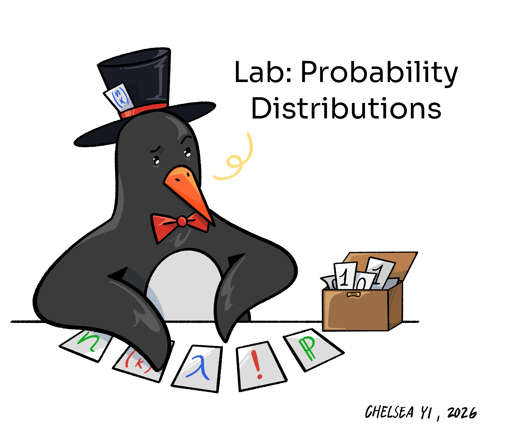

class_scores <- read_csv("https://docs.google.com/spreadsheets/d/e/2PACX-1vRpiSKsoCnuIQtK5CH1RzMAK1v76Ty1j-UxvqDmG-Z-sYygG2HIOe4Z_gfXXBf7Zb5y-VUVIrfcRdJ2/pub?output=csv")Lab 6: Are You Psychic? Can I Win at this Weird Dice Game? And Other Questions Probability Distributions can Answer

Part I: Are you Psychic?
Today we’re going to find out whether anyone in this class is psychic!
Head to https://www.stat2games.sites.grinnell.edu/games/psychic.html and play one round of the Psychic game: you’ll make 10 guesses, each time picking one of 5 symbols. Keep track of how many you get correct out of 10.
Once you have your score, enter it into our class results sheet: https://docs.google.com/spreadsheets/d/1XvNR203fU7_6VTSvewXsMUbR0_iEqOdg2Ewp7wZ9A3k/edit?usp=sharing.
We’ll use the whole class’s results later in this lab, so make sure you’ve submitted your score before starting Question 3.
Question 1
Suppose someone playing this game has no real psychic ability at all, and is simply guessing among the 5 symbols (with equal probability - by rolling a fair five-sided die), on every one of the 10 trials, independently of their other guesses.
part a
What is the probability of guessing any one trial correctly if they guess in this way? (This kind of guessing is called uniformly at random.)
part b
Let \(X\) be the number of correct guesses out of the 10 trials, assuming uniformly at random guessing. What is the probability distribution of \(X\)?
part c
What assumptions about the game are you relying on in order for \(X\) to follow the distribution you named in part b? (Think about what would have to be true about each of the 10 trials.)
Question 2
We’ll now build the theoretical distribution of \(X\) from Question 1.
part a
Create a data frame called q1 with two columns:
The first column contains, from least to greatest, the possible values of \(X\).
The second column contains the probability for each possible value of \(X\).
part b
Using q1 and ggplot(), create a probability histogram for \(X\).
Tip
Notice that the x-axis is treated continuously even though \(X\) is a discrete random variable. To fix this, you may use the scale_x_continuous() layer with its breaks argument after your geom layer. For example, if your random variable has a range of 0,1,…,10: scale_x_continuous(breaks = seq(from = 0, by = 1, to = 10)) will do the trick. Also note that you will need to use geom_col() since you need the height of each bar over a particular value of \(X\) to be the probability of that value of \(X\).
part c
Using the distribution you built, calculate:
the probability of guessing at least half (5 or more) correct purely by chance;
the probability of guessing a perfect score (all 10) purely by chance.
Question 3
Now let’s bring in the class’s actual results.
part a
Read the class results into R directly from the shared Google Sheet, and save the result into an object called class_scores. Note that the chunk below will not render since eval is set to false. You may copy this line into your own document.
part b
Modify the data frame class_scores as indicated below:
one column containing each unique score that appears among the class’s results, and
a second column containing the proportion of the class that got each score.
Hint: this is the same group_by()/summarise() pattern you’ve used to build empirical distributions before.
part c
Using q3 and ggplot(), create an empirical histogram of the class’s actual scores.
part d
Compare your empirical histogram from part c to the theoretical probability histogram from Question 2, part b. Where is the class’s distribution of scores centered relative to what pure random guessing would predict? Are there any scores that came up a lot more, or a lot less, often than the pure-guessing model would suggest? Answer in two to three sentences.
Question 4
In two to three sentences, describe one reason we should be cautious about directly comparing the class’s empirical distribution to the theoretical Binomial distribution from Question 1. (Some things to consider: how many students are in the class, whether everyone guessed independently of each other, and whether the 5 symbols are truly equally likely to appear in the game.)
Part II: Let’s roll some dice!
Question 1
We are going to revisit an example in the history of probability: one of the problems posed by French gambler Antoine Gombaud, better known by his nom de plume “Chevalier De Méré”. As you may have read about in your notes, he was not a nobleman, despite his name, but an amateur mathematician and an avid gambler. One of De Méré’s favorite games of chance was the following game of dice:
You roll a fair, six-sided die four times;
and you win if you get at least one six.
While it is possible to find—in an analytical way—the probability of winning in this type of game, in this lab, we are going to use simulations to approximate this probability!
part a
Create a numeric vector called die with values 1,2,3,4,5,6.
part b
Using die, write code to simulate one round of De Méré’s game (four die rolls) and save the results into the object four_rolls.
part c
Using the four_rolls object, write a line of code to obtain the number of sixes rolled.
part d
Write code to repeat the process of parts b-c 10,000 times. That is, write code that will create a vector of 10,000 entries, where entry 1 contains the number of sixes rolled in round 1, entry 2 contains the number of sixes rolled in round 2, and so on. Save the resulting vector into the object count_sixes.
Tip
Is there a function we’ve introduced this week that can help make the code efficient?
part e
Using count_sixes, approximate the probability of getting at least one six in four rolls.
part f
Again, De Méré’s game involves rolling a fair, six-sided die four times. Consider the number of times that a six is rolled across the four times. What probability distribution does this follow? State the name and any parameter(s).
part g
Use the probability distribution you identified in part f to calculate the probability of getting at least one six in four rolls. Your answer in part e should be close to what you get here.
Tip
There might be R function(s) in the Random Variables tutorial that can help you with this.
WARNING: Does your rendered pdf have 30+ pages? (And do you want to get credit?)
If your final pdf is really long, you are probably printing an entire dataframe in one of your code cells. For example, a line that just says flights will print the entire flights dataframe (over 100,000 rows!). You don’t realize this, because RStudio is smart enough to hide most of the rows from your screen while you’re working. But when you render, it will obediently print every single row of the dataframe, giving you an unwieldy output.
To fix this, anytime you have a line that is just displaying a dataframe (e.g. just flights), change it to only show the first few rows by using either the head function, e.g. head(flights) or the tidyverse equivalent slice_head(flights, n = 10).
Last Question
Will you ensure that your submission to Gradescope…
- is a pdf generated from a qmd file
- your code is fully visible (not running off the page)
- follows formatting rules (here)
- and assigns each of the questions to all pages that show your work for that question?
(This one is easy! Just answer “yes” or “no”)